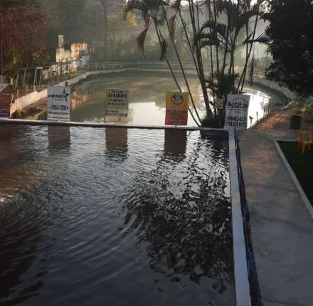
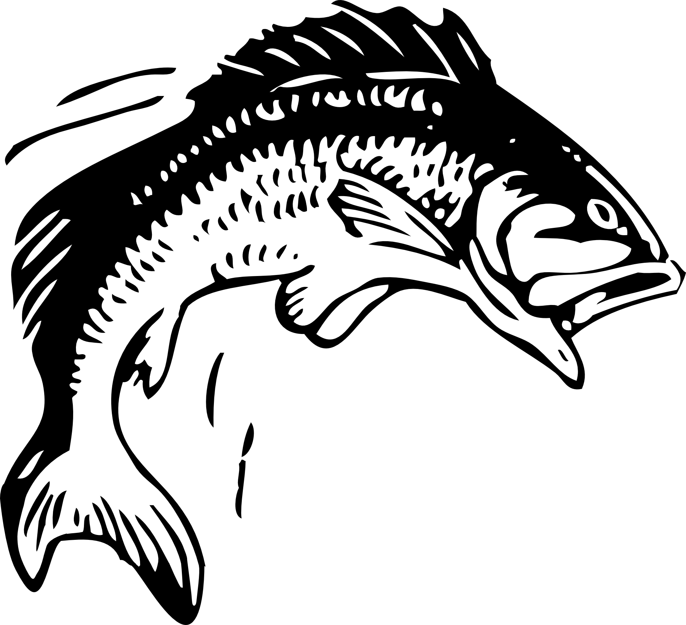

Sobre o Pesqueiro do Arnaldão
Pesqueiro do Arnaldão foi fundado em 1980 com a intenção de entreter nossos cliente na base da excelente culinária mineira e a diversão de poder pescar uns peixinhos, localizado na região de São Paulo - SP: Zona Norte, não perca a oportunidade e traga toda sua família!
Possuimos 2 tanques onde o primeiro tem apenas Tilápias para o pescador que prefere ações manhosas e também temos um tanque abaixo que as variedades são maiores, Tambaquis, Carpas, Bagres, etc.

- 